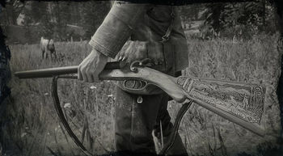

Weaponry
With around 59 weapons for the taking in 'Red Dead Redemption II', there were bound to be some that were more hidden than others. Here we have compiled a list of some of the rarest guns in-game:
Images Sourced From:
1. RedDeadWiki.com
2. IGN.com
3. NewsWeek.com
4. NewsWeek.com
5. NewsWeek.com
6. RankedBoost.com
7. NewsWeek.com

1. Rare Double-Baralled Shotgun
North-East from Annesburg, in the state of New Hanover, there is a cabin with a hermit living there on the most north easterly point of the map. if you aggitate him enough, he will begin firing at you with the 'Rare Double-Baralled Shotgun'. Kill him and pick up the gun from his corpse to obtain it.
2. Rare Rolling-Block Rifle
In Chapter 3, you will be given a mission by Dutch called 'Magicians for Sport'. At some point in the mission, you will be tasked to kill bounty hunters in a cornfield. After sucessfully finding the last man in the cornfield, the remaining two will be marked on the map, inside a barn. There, one of the men will be carrying the 'Rare Rolling-Block Rifle'.
3. Flaco's Revolver
A number of rare variants of weapons can be found in the 'Stranger Mission', 'The Noblest of Men, and a Woman'. In order to obtain 'Flacos Revolver', you must first ride to his camp beside Cairn Lake, in the Northern State of Ambarino. Upon arrival, you will be greeted by gunshots from his gang memebers, before dueling Flaco himself. Once killed, his signature weapon can be picked up.

4. Granger's Revolver
To the East of Flatneck Station, there should be a 'Stranger Mission' marked on the map called Emmet Grange if you have already stareted the quest 'The Noblest of Men, and a Woman'. Here you will engage Grange in a duel,in which after, if you win that is, have the opportunity to pick up his custom revolver.
5. Calloway's Revolver
Another obtainable weapon variety can be found in the climax of the questline, 'The Noblest of Men, and a Woman', this is found at about Chapter 6 in the story, in the North-East point of New Hanover. In order to get claims of it, you must yet again duel, this time against Calloway himself. After doing so, you will be granted access to his revolver.
6. Algernon's Revolver
Just outside the North end of Saint Denis, should lie a 'Stranger Mission' for someone named Algernon. He will provide you with a list of rare plants to gather for him, and promises a reward for doing so. This reward being his revolver.
7. Midnight's Pistol
'Midnight's Pistol' is the final obtainable weapon in 'The Noblest of Men, and a Woman' questline. It can be found by meeting up with Midnight himself, by the Rhodes train station marked on the map. Once there, and after beating him in a duel, you can equip the aforementoioned weapon, that he dropped.